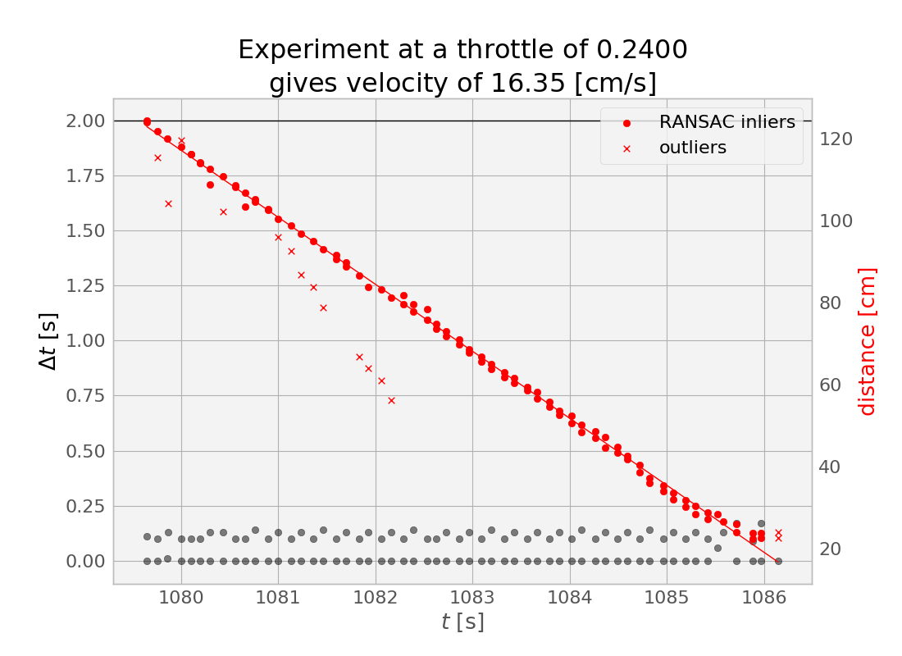

Gudrun


This robot will be a variant of the Donkey car, probably using the recommended chassis. However, instead of controlling it with a Raspberry Pi, I'll use a computer I built last year (mini-ITX, I think) for a different purpose. I might replace the motherboard with a slim-mini-ITX, a standard which includes a 19VDC power jack. Otherwise I'd need something like this to provide motherboard power.
Either way, I'll probably need to use a boost converter (which I already have), and I think it should draw about 130W max (according to the estimate from pcpartpicker on the page where you select a power supply). This battery which is currently in Gunnar should be able to handle 100 amps according to this calculator, so I think this should be fine for about an hour of use--certainly a half-hour.
In a later iteration, I might use the more power-efficient Nvidia TX2, but, for this build, I want to minimize the specialness of the computer as much as possible, so that everything is just standard Ubuntu. (The TX2, like the Raspberry Pi, runs a custom linux with an ARM CPU, instead of a "normal" x86_64 CPU, meaning installing software is often harder.)
Gudrun will be the successor to two previous builds of mine, Hogni and Gunnar, all three of whom were mythologically siblings. (Also, note to self, if I want to continue this naming scheme, there's a good list at the bottom of that article.)
Simple ultrasound reactive control
26 February 2019
Ultrasound for reactive obstacle avoidance
I added two ultrasound sensors looking off to the left and right
on the front bumper. An arduino dumps these into a serial terminal at a minimum
of about 5Hz, usually faster), and a ROS node reads these and puts them into two
sensor_msgs.msg.Range topics.
I implemented two behaviors--a back-up-and-turn,
where we try to go in the direction where there's more space,
and a go-forward, where the steering fraction \(\in(-1,1)\)
is computed like
$$\tanh\left( (d_r - d_l) \cdot \lambda \right)$$
and this noisy output is passed through a 10-entry rolling mean filter
(using collections.deque!).
The result is an illusion of path planning! But it's still really just reactive.
In other news
I've tested the openni_* ROS packages, and found that they produce a surfeit
of depth-camera topics from my first-generation Kinect sensor (the power cable
of which I lopped off and replaced with a barrel connector to my pre-ATX 12V rail).
No accelerometer data, though--it would be nice not to have to add a separate IMU,
and instead just use the one that's in the Kinect.
I think the kinect_aux package will get this for me.
I hope I can fake "odometry" from this IMU data, and so obviate the need for separate wheel encoders. However, if I need them, my current plan is to glue half a dozen tiny magnets regularly spaced around the inside of the back wheels, and position a Hall-effect sensor nearby. But I'd rather not have to make another mini-project out of getting that little Arduino-project working properly, reading my poor-man's grey code. Integrating an IMU in (non-embedded) software would be easier.
As for real planning, I still have some reading to do
to figure out what's available already-written
for Ackermann-kinematics robots.
I've seen TEB local planner
used by others; I'm not sure that this would work with the same global planners
used in the gmapping stack, since some maneuvers, like N-point turns,
are fundamentally different between Ackermann and differential-drive kinematics.
I'm not above writing my own planning software
(actually, writing a quick and dirty pair of MPC-local + tree-based-global
would be a worthwhile endeavor,
and maybe not too much harder than getting existing packages installed,
tuned, and working smoothly),
but first I need at least write a motor controller
that react to ackermann_msgs.msgs.AckermannDrive messages properly.
And, of course, getting SLAM working with the Kinect is a whole separate miniproject.
Architectural plan
28 February 2019
I've done a fair bit of thinking on where I think I should go with this project, and so I'm gathering here my thoughts on what techniques I plan to use in each level of the stack.
Drivers
First, I need to be sure that I'm getting all the data I'll need for subsequent steps. This will be the easiest step, and is already mostly done. I want to be able to teleop the car using only these methods, and watching visualizations from these topics, before I proceed.
- Respond to
AckermannDrivemessages, minimally responding to thesteering_angleandspeedfields. Since the Pololu Micro Maestro servo controller I'm using to communicate with the car's ESC actually supports ramps with specified speed, a possible stretch goal would be to do something intelligent with thesteering_angle_velocity,acceleration, andjerkfields. For now, it will be enough to call Pololu's providedUscCmdprogram withos.systemin our ROS node to set the speed and angle, but their serial protocol is pretty well documented (summarized for my use here) so I could avoid the repeated subprocess by sending commands by serial directly. - Use the
openni_*packages to publish RGBD information. (tested and working) - Use
kinect_auxto publish the Kinect's IMU information as asensor_msgs/Imutopic. (not yet tested)
Perception, sensor fusion, and mapping
When I have some confidence that I as a human can drive the car using the same sensor data and command topics that I'll be providing to higher-level packages, I can turn to replacing my intuition-based sensor fusion to something more concrete.
- Use something to fake odometry from the Kinect's IMU data. I think that this may be possible via one of the nodes in
robot_localization. This is the part I'm most uncertain about. However, since this is superficially a pretty simple task (some interesting notes here; it might be worthwhile to include our actual motor commands in this reckoning, but for that I'll have to sit down with pencil and paper and work out some (E/U)KF scheme), I might just write my own code to make a best-effort IMU odometer. I've seen gmapping fix some pretty egregious wheel-encoder odometry errors in the past, so I think this will be just fiiiine. - There seem to be many libraries available that will perform SLAM on RGBD or 3D point cloud data. However, after searching for a couple hours, I'm actually having difficulty finding one that will install on ROS Melodic. So, I think I'll take the simpler approach of throwing away most of the RGBD data and instead using one slice as a laserscan via the melodic-available
depthimage_to_laserscan. So, I'll probably just use this and gmapping. KISS.
Speed control
I have some doubts here. In previous work, I had a tight control loop running on an Arduino to maintain commanded motor speeds. Here, I don't have wheel encoders, so the best I might be able to do is have a loose loop between my (likely very poor) odometry from the perception phase to my motor command interface in the driver phase.
The more I think about this, the more I think that adding some sort of wheel encoders would greatly simplify many other parts of the design. Maybe I should do that Hall-effect sensor side project after all.
Planning
Once I can watch the map being generated as I teleop around, I can set up a medium-level planning stack.
-
teb_local_plannerseems to be the way to go for what they call a local planner. However, the videos there suggest that this planner is capable of fairly advanced maneuvering, with multi-point turns, and it seems that it does consider multiple topologically distinct local plans. - However, TEB does require a
nav_msgs/Pathglobal plan, which can be create simply withglobal_planner(that is, A* or Djikstra, or some clever smoothed, interpolated combination) from the standard navigation stack.
Behaviors!
This is the more fun, conceptual part. As suggested by the TEB docs, I'll need to disable some of the low-leve behaviors that come with the navigation stack (like the spin and clear). Witness instead the simple Behavior superclass I made, without much thought, for the little bump-drive script I made last week. But, really, this section is more about high-level behaviors. I have a few ideas, some of which require more hardware/software additions than others:
Wander around, and identify and catalog objects. Fairly easy:
-
Set random navigation objectives (perhaps with some frontier exploration strategy, though that's pretty optional).
-
Wander around, take photographs annotated with current poses (and therefore, ideally, the photographed objects position--the RGBD might help a lot with this).
-
Pass them to some pre-trained object recognition neural network (I have a Google Edge TPU I want to try to use for this), and note any high-confidence hits.
-
Assemble a database from these and make a nice frontend for querying it. Maybe a visual menu, and and for each item, there'd be a "take me there" button. The robot would drive to the remembered pose (including orientation), and then (stretch goal!), use a pair of servos to direct a laser pointer at the remembered position of the object (or even redetect it live and point to the object's updated location).
Patrol. In addition to or in place of the previous goal, we'd explore as far as possible (e.g., a whole apartment), and then continuously revisit the areas we saw the least recently. A nice trick would be to do some sort of anomaly detection. Somehow featureize all the views of the apartment (probably just camera+pose) and then continuously do some unsupervised learning to detect when these features go away from the typical. Obviously, the border of the "typical" region in feature space will become better-characterized as we gather more data, and there will be lots of false positives at first (it's dark! this is unfamiliar! I'm afraid!).
Recharge. In addition to either or both of the previous, it would be great if Gudrun could recharge herself. I have had some thoughts on this, but put it on hold as overcomplicated and not necessary for now. Basically, though, my thoughts are divided between
-
loading onto the underdeck a pair of simple NiMH and Li-Ion (balancing) battery chargers designed for standalone use, and then using a complex arrangement of transistors, relays, and ADC voltage sensing to flip power over suddenly from battery to an external bumper; and
-
wrapping the batteries in some battery management system, (preferably with balancing capability), and trying to avoid letting the batteries ever get so low that they need a proper "charger". Basically, float-charging them at below nominal voltage. I have a couple of ~5V solar panels that might contribute here, especially if I do ...
Outdoor path following. Here, the more focused goals of above might be discarded in place of just being able to navigate reliably across campus. However, an issue with this is that the view distances are typically much longer than in indoor scenes, and so path planning is very different. However, in a way, there's more opportunity for creativity here, since it's less geometric and special-senor based, and more computer vision. Really, though, since this would involve significant changes to the above stack, it would almost be separate project. But, as the weather gets warmer, this might beckon more strongly...
Open-loop control of speed
2 March 2019
Gathering data
I expect that, eventually, I will need closed-loop control of speed. So, I've ordered some tiny 2 mm cylindrical magnets and Hall-effect sensors, and later I'll try gluing the magnets onto the inside of my rear wheels, watching for their passage with the hall effect sensors, and getting a crude measurement of velocity from that.
But, for now, I want to know simply what are reasonable throttle values to use for a given requested velocity. This is a crude form of open-loop control: give the control action that your internal model says should be right under the current circumstances to achieve the desired process output.
At first, I dutifully made a launchfile that drove forward at a specified throttle for a couple seconds, and started measuring driven distances with my tape measure. However, I quickly realized that I could get a lot more data at higher quality if I used my ultrasound, so I wrote a different launch file that also started the ultrasound, and recorded time, throttle, steering, and ultrasound measurements to a CSV file.
I then loaded this data into a Jupyter notebook. It quickly became clear that I could split up my experiments by looking for big spikes in the \(\Delta t\) between ultrasound measurements.
And then, for each experiment, there were some clear outliers--caused, I imagine, by the ultrasound picking up some spurious echoes. I rejected these in my regression by using Scikit-learn's RANSAC linear regressor, and tuning the residual_threshold parameter to reject what, to my eye, seemed appropriate for rejection in some spot checks.

In the experiment shown above, you can see that our distance to the wall decreases steadily as our fixed throttle maintains fixed speed (in equilibrium against the rolling resistance, on flat ground), until we eventually hit the wall (or, more accurately, we first hit the min_range for our ultrasound topic), leading to some outliers at the right side of the plot (around \(t=1086\) seconds)
The important thing to get from this experiment at a throttle value of 0.24 was the slope of this line--the centimeters per second value. I managed to get 23 other such pairs from the data, and created a calibration curve.

Here, I again did two more regressions, and, again, I used RANSAC to throw away one obvious outliers. I probably could have just done this manually, but I might want to get more data in the future—especially in the forward direction--and this approach generalizes better. One important thing to notice here is that there is a significant dead zone in the throttles. I could perhaps characterize this better by gathering some more data in the approach to and beyond the transition into the dead zone, especially in the forward direction.
Another thing that might be worth doing is dumping the ultrasound for this and instead using my fancy depth camera--this will be less susceptible to the echo problem of the ultrasound (which got worse as I got further from the wall). However, with the RANSAC to reject outliers, it may be possible to get significantly further from the wall than the 1.2 meters or so that I was doing in the above batch of experiments. This is important because it would enable taking data at higher speeds.
(Here the point where I admit that, at one point, I disabled my MAX_THROTTLE_ABS safeguard, and then, due to a bad command line, ended up running into the wall at max throttle, with about 15 feet of runway to get up to speed. Luckily, I had a spare ultrasound sensor to replace the one that seemed to stop working at this point, and I was back online in minutes.)